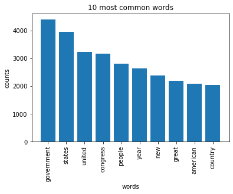
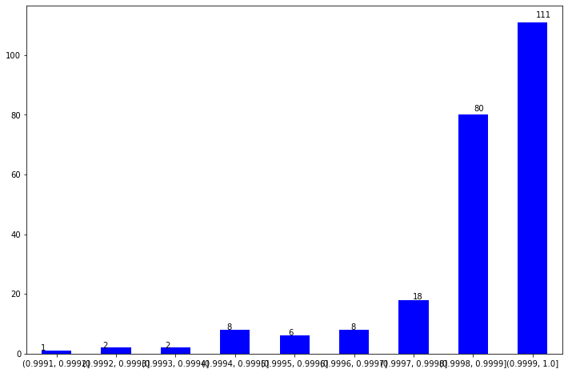
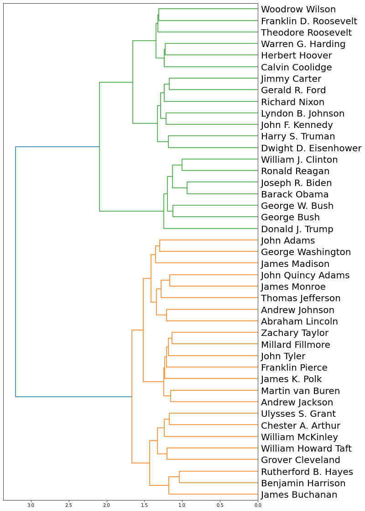
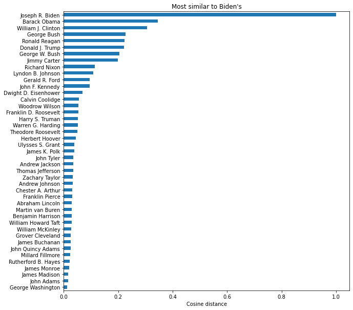

Refer to the state of the union addresses made by US presidents since WWII. To simplify the task, only looks at the first address for each president. (You can find the archive here: https://www.presidency.ucsb.edu/documents/presidential-documents-archive-guidebook/annual-messages-congress-the-state-the-union (Links to an external site.))
Look at the frequency of words
Look at topic modeling (what do they talk about)
# We start as always with importing the necessary librariesimport requests #PACKAGE THAT allows us download texts from online (e.g. I request Moby Dick's online book without downloading it)import refrom requests import getfrom bs4 import BeautifulSoup #Submodule of bs4 (I don't need the entire package). import nltk #natural language processing (NLP)from nltk.sentiment.vader import SentimentIntensityAnalyzerfrom collections import Counter from requests import getimport pandas as pdimport plotly.express as pximport plotly.graph_objs as goimport plotly.offline as pyimport numpy as npfrom sklearn.feature_extraction.text import CountVectorizerfrom sklearn.decomposition import LatentDirichletAllocation as LDAimport numpy as npimport itertoolsimport matplotlib.pyplot as pltfrom gensim import corpora, similaritiesfrom gensim.models import TfidfModelfrom scipy.cluster import hierarchyfrom nltk.stem import PorterStemmerimport pickleimport warningsimport wordninjafrom selenium import webdriverfrom selenium.webdriver.common.by import Byfrom autocorrect import Spellerfrom nltk.stem import WordNetLemmatizerfrom nltk.corpus import wordnetimport contractionsimport nltkfrom sklearn.feature_extraction.text import TfidfVectorizerfrom nltk.tokenize import word_tokenizefrom scipy.cluster.vq import kmeans, vqfrom sklearn.naive_bayes import MultinomialNBfrom sklearn.model_selection import train_test_splitfrom sklearn import metricsfrom sklearn.svm import LinearSVC#for the code to worknltk.download('averaged_perceptron_tagger')nltk.download('wordnet')nltk.download('vader_lexicon')
[nltk_data] Downloading package averaged_perceptron_tagger to
[nltk_data] /Users/loizoskon/nltk_data...
[nltk_data] Package averaged_perceptron_tagger is already up-to-
[nltk_data] date!
[nltk_data] Downloading package wordnet to
[nltk_data] /Users/loizoskon/nltk_data...
[nltk_data] Package wordnet is already up-to-date!
[nltk_data] Downloading package vader_lexicon to
[nltk_data] /Users/loizoskon/nltk_data...
[nltk_data] Package vader_lexicon is already up-to-date!
True
Refer to the state of the union addresses made by US presidents since WWII. To simplify the task, only looks at the first address for each president. (You can find the archive here: https://www.presidency.ucsb.edu/documents/presidential-documents-archive-guidebook/annual-messages-congress-the-state-the-union (Links to an external site.))
We ask BeautifulSoup to locate a table on the page, scan through the rows of this table, and then get the first link on each of the rows.
url ="https://www.presidency.ucsb.edu/documents/presidential-documents-archive-guidebook/annual-messages-congress-the-state-the-union"#https://www.presidency.ucsb.edu/documents/app-categories/spoken-addresses-and-remarks/presidential/state-the-union-addresses## Find the first instance of a table on the page (this will simplify work for us)response = get(url)soup = BeautifulSoup(response.text, 'html.parser')table = soup.find('table')# Create an empty list to keep all the linkslinks = []# Look through each row of the table to identify if there are links,# if there are any, then get the first link, if there aren't any, just skip that rowif table.findAll("tr"): trs = table.findAll('tr') for tr in trs:try: link = tr.find('a')['href'] # Finds the first link in a row links.append(link) # Appends that link to the links list.except:passprint(table)
# We can also find all instances of the links on a page and that's what the code below does# You can use the code below but I want to solve a more general version of the homework, # so I will use this code here:############trs= table.findAll('tr')for tr in trs:try: aas = tr.find_all('a') # Finds the first link in a rowfor a in aas: link = a['href'] links.append(link) # Appends that link to the links list.except:pass# ## #links# ############## # Note that we had to use the try: and except:,# # because otherwise the code would result in an error as some rows don't have any links # # Uncomment the code below to see this for yourself.# # Select the links that are neededlinks_needed = links[0:22]# for tr in trs:# link = tr.find('a')['href'] # Finds the first link in a row# links.append(link) # Appends that link to the links list.
# Links now has all the links we needed. I can save them to an excel file # just in case I need thempd.DataFrame(links).to_excel("links.xlsx")
# We can now go through individual links and extract the information we want.# If we examine the pages of each speech, we will notice each speech is stored inside# the following tag "<div class="field-docs-content"> </div>". # That's what we can grab.# We can also grab the date stored inside the following tag:# <div class="field-docs-start-date-time"></div># Finally, to make our life even more easy, let's grab the name of the President# It's in the tag "<div class="field-title"></div>"# I will also grab the title of the speech just in case I need to use it since the titles differed somewhat# We start with creating empty containersnames = []dates = []speeches = []titles = [] #for link in links:# try:# response = get(link)# except: # I need this because Nixon's speech in 1973 in done in an annoying way, it's a footnote actually# pass # so the code without it would result in an error# soup = BeautifulSoup(response.text, 'html.parser')# name = soup.find("div", class_ ="field-title").get_text(strip=True)# # date = soup.find("div", class_ ="field-docs-start-date-time").get_text(strip=True)# # title = soup.find("div", class_ ="field-ds-doc-title").get_text(strip=True)# # #speech = soup.find("div", class_ ="field-docs-content").get_text(strip=True)# names.append(name)# # dates.append(date)# # titles.append(title)# speeches.append(speech)# print(names)
# #create a list of president namesPresidentName = ['Joseph R. Biden', 'Donald J. Trump', 'Barack Obama', 'George W. Bush','William J. Clinton', 'George Bush', 'Ronald Reagan', 'Jimmy Carter','Gerald R. Ford','Richard Nixon', 'Lyndon B. Johnson','Dwight D. Eisenhower','Harry S. Truman', 'Franklin D. Roosevelt']# #manually extract linksof first speech of each presidentlink_index = [1,2,7,14,22,30,34,42,49,52,59,68,79,91]link_index = [1,2,7,14,22,30,34,42,49,52,59,65,68,79]newlink=[links[i] for i in link_index]print(PresidentName)print(newlink)#COMMAND + SLASH
['Joseph R. Biden', 'Donald J. Trump', 'Barack Obama', 'George W. Bush', 'William J. Clinton', 'George Bush', 'Ronald Reagan', 'Jimmy Carter', 'Gerald R. Ford', 'Richard Nixon', 'Lyndon B. Johnson', 'Dwight D. Eisenhower', 'Harry S. Truman', 'Franklin D. Roosevelt']
['https://www.presidency.ucsb.edu/ws/index.php?pid=123408', 'https://www.presidency.ucsb.edu/ws/index.php?pid=102826', 'https://www.presidency.ucsb.edu/ws/index.php?pid=47232', 'https://www.presidency.ucsb.edu/ws/index.php?pid=2921', 'https://www.presidency.ucsb.edu/ws/index.php?pid=16603', 'https://www.presidency.ucsb.edu/ws/index.php?pid=29558', 'https://www.presidency.ucsb.edu/ws/index.php?pid=29542', 'https://www.presidency.ucsb.edu/documents/first-annual-message-11', 'https://www.presidency.ucsb.edu/ws/index.php?pid=29486', 'https://www.presidency.ucsb.edu/ws/index.php?pid=29475', 'https://www.presidency.ucsb.edu/ws/index.php?pid=29447', 'https://www.presidency.ucsb.edu/ws/index.php?pid=3996', 'https://www.presidency.ucsb.edu/ws/index.php?pid=4121', 'https://www.presidency.ucsb.edu/documents/address-before-joint-session-the-congress-the-state-the-union-25']
# #create a dataframedf = pd.DataFrame()df['PresidentName'] = PresidentNamedf['Links'] = newlinkdisplay(df.Links.values)print(df)
PresidentName Links
0 Joseph R. Biden https://www.presidency.ucsb.edu/ws/index.php?p...
1 Donald J. Trump https://www.presidency.ucsb.edu/ws/index.php?p...
2 Barack Obama https://www.presidency.ucsb.edu/ws/index.php?p...
3 George W. Bush https://www.presidency.ucsb.edu/ws/index.php?p...
4 William J. Clinton https://www.presidency.ucsb.edu/ws/index.php?p...
5 George Bush https://www.presidency.ucsb.edu/ws/index.php?p...
6 Ronald Reagan https://www.presidency.ucsb.edu/ws/index.php?p...
7 Jimmy Carter https://www.presidency.ucsb.edu/documents/firs...
8 Gerald R. Ford https://www.presidency.ucsb.edu/ws/index.php?p...
9 Richard Nixon https://www.presidency.ucsb.edu/ws/index.php?p...
10 Lyndon B. Johnson https://www.presidency.ucsb.edu/ws/index.php?p...
11 Dwight D. Eisenhower https://www.presidency.ucsb.edu/ws/index.php?p...
12 Harry S. Truman https://www.presidency.ucsb.edu/ws/index.php?p...
13 Franklin D. Roosevelt https://www.presidency.ucsb.edu/documents/addr...
outcome = []for lnk in df.Links.values: r = requests.get(lnk) r.encoding ='utf-8' html = r.text soup = BeautifulSoup(html,'html.parser') text = soup.get_text() outcome.append(text)# print(pd.DataFrame(outcome))#all the speeches in tabular format
outcome1 = [x.replace("\n", "") for x in outcome]#I replace 'n' with nothingdf2 = pd.DataFrame(outcome1)#I create a new dataframedf2[[0]]
0
0
Address Before a Joint Session of the Congress...
1
Address Before a Joint Session of Congress on ...
2
Address Before a Joint Session of Congress on ...
3
Annual Message to the Congress on the State of...
4
Radio Address Summarizing the State of the Uni...
5
Fifth Annual Message | The American Presidency...
6
First Annual Message | The American Presidency...
7
First Annual Message | The American Presidency...
8
First Annual Message | The American Presidency...
9
Fifth Annual Message | The American Presidency...
10
Fifth Annual Message | The American Presidency...
11
State of the Union Message to the Congress: Ov...
12
State of the Union Message to the Congress on ...
13
Address Before a Joint Session of the Congress...
What are the 10 most common “meaningful” words used by each president since Harry Truman? What does it say about the shift in priorities in the American politics?
#Previous speech links were not scraped so we import the excel that includes them here for the analysisspeeches = pd.read_excel('state_of_the_union_speeches.xlsx')#I use a function and include the code that want to apply for every president.def my_function(x): r = requests.get(x['html']) r.encoding ='utf-8' html = r.text #print(html[0:2000]) soup = BeautifulSoup(html, "html.parser") president_text = soup.get_text()#print(president_text[0:2000])#THE DOCUMENT IS TOKENIZED -- SPLITTING TEXT INTO INDIVUDUAL WORDS tokenizer = nltk.tokenize.RegexpTokenizer('\w+') tokens = tokenizer.tokenize(president_text) #print(tokens[0:10])#Defining stopwords and adding more to the list. This list is same across all 14 presidents' speeches. sw = nltk.corpus.stopwords.words('english') newsw = ['annual', 'number', 'help', 'thank', 'get', 'going', 'think', 'look', 'said', 'create', 'citizens', 'citizen', 'across', 'since', 'go', 'believe', 'say', 'long', 'better', 'plan', 'national', 'ask''10', 'much', 'good', 'great', 'best', 'cannot', 'still', 'know', 'years', '1', 'major', 'want', 'able', 'put', 'capacity', 'programs', 'per', 'percent', 'million', 'act', 'provide', 'afford', 'needed', 'may', 'possible', 'full', '2', 'effort', 'meeting', 'address', 'ever', 'measures', 'ago', 'delivered', '5', 'program', 'past', 'future', 'need', 'needs', 'house', 'also', 'tonight', 'propose', 'toward', 'continue', 'society','country', 'seek', 'period', 'year', 'man', 'men', 'one', 'areas', 'begin', 'live', 'make', 'let', 'upon', 'well', 'office', 'meet', 'make''citizens', 'human', 'self', 'among', 'peoples', 'affairs', 'would', 'field', 'first', 'interest', 'today', 'recommendations', 'recomenndation', 'within', 'shall', 'administration', 'nation', 'nations', 'us', 'we', 'policy', 'legislation', 'time', 'new', 'many', 'several', 'few', 'government', 'world', 'people', 'united', 'states', 'system', 'every', 'people', 'must', '626','give', 'categories', '226762', '17608', '24532', '430', '38','statistics', 'analyses', 'miscellaneous', 'congressional', 'skip', 'content', 'documents', 'attributes', 'media', 'message', 'congress', 'state', 'union', 'america', 'american', 'americans', 'presidency', 'president', 'project', 'search', 'toggle', 'navigation', 'search', 'guidebook', 'archive', 'category', 'main', 'take','like','yet','j','000', 'ask', '1974', 'federal', 'http', 'www', 'usb','edu', 'the', 'the', 'before', 'joint', 'session', 'the','american', 'america','year','congress','let','time', 'nation', 'new', 'people'] sw.extend(newsw)#print(sw[0:30]) president_words = [token.lower() for token in tokens] words_ns = [word for word in president_words if word notin sw] #print(words_ns[:20]) president_ns =" ".join(words_ns)#Determining the most commoon words count = Counter(words_ns) top_ten_president = count.most_common(10) top_10_string =','.join([str(x) for x in top_ten_president]) print_list = [top_10_string]return print_list#for i in range(13):# # fun(df2)top_list = []for index, row in speeches.iterrows(): top = my_function(row) top_list.append(top)speeches['top ten'] = top_listdisplay(speeches)print(speeches)
Interpretation of all president’s words since Truman
American priorities shifted over time. As we can see, From Hoover (1929) until Nixon (1974) issues and words related to “freedom”, and “peace” were emphasized. This makes sense since during that time, WW2 and the Vietnam War were fought.
“Economy” seems like a topic that is popular in almost every presidency.
During Ford’s and Reagan’s presidency, “tax”, and “growth” became really hot buzz words. Especially during Reagan administration, big tax reforms were introduced which they have significantly reduce taxes for businesses.
“inflation” and “energy” were also popular during Nixon, Ford, and Reagan. It is important because especially during Nixon, the US economy after 14 years of economic development got in a stagflationary state; oil and gas crisis at the 70s was also a part of that.
During George W Bush (2005), “security” was the most popular word used. This is because especially after 911, security became the main focus of his presidency.
Healthcare gained importance during the Clinton Administration, and two administrations later, the Obama Administration expanded Medicaid. With the Covid-19 pandemic, healthcare again dominated the policy priorities in Biden’s 2022 address.
All the presidents, irrespective of their political affiliation (Democrats vs Republicans), mentioned about strengthening / growing the economy. Only presidents affiliated with the Democratic party seemed to emphasize on “healthcare”, whereas a common theme among the Republican presidents’ addresses was “war / military spending / terrorism”.
Top ten words of all Democrat Presidents
#Previous speech links were not scraped so we import the excel that includes them here for the analysisdemocrat_speeches = pd.read_excel('democrat_speeches.xlsx')#I use a function and include the code that want to apply for every president.def my_function(x): r = requests.get(x['html']) r.encoding ='utf-8' html = r.text #print(html[0:2000]) soup = BeautifulSoup(html, "html.parser") president_text = soup.get_text()#print(president_text[0:2000])#THE DOCUMENT IS TOKENIZED -- SPLITTING TEXT INTO INDIVUDUAL WORDS tokenizer = nltk.tokenize.RegexpTokenizer('\w+') tokens = tokenizer.tokenize(president_text) #print(tokens[0:10])#Defining stopwords and adding more to the list. This list is same across all 14 presidents' speeches. sw = nltk.corpus.stopwords.words('english') newsw = ['annual', 'number', 'help', 'thank', 'get', 'going', 'think', 'look', 'said', 'create', 'citizens', 'citizen', 'across', 'since', 'go', 'believe', 'say', 'long', 'better', 'plan', 'national', 'ask''10', 'much', 'good', 'great', 'best', 'cannot', 'still', 'know', 'years', '1', 'major', 'want', 'able', 'put', 'capacity', 'programs', 'per', 'percent', 'million', 'act', 'provide', 'afford', 'needed', 'may', 'possible', 'full', '2', 'effort', 'meeting', 'address', 'ever', 'measures', 'ago', 'delivered', '5', 'program', 'past', 'future', 'need', 'needs', 'house', 'also', 'tonight', 'propose', 'toward', 'continue', 'society','country', 'seek', 'period', 'year', 'man', 'men', 'one', 'areas', 'begin', 'live', 'make', 'let', 'upon', 'well', 'office', 'meet', 'make''citizens', 'human', 'self', 'among', 'peoples', 'affairs', 'would', 'field', 'first', 'interest', 'today', 'recommendations', 'recomenndation', 'within', 'shall', 'administration', 'nation', 'nations', 'us', 'we', 'policy', 'legislation', 'time', 'new', 'many', 'several', 'few', 'government', 'world', 'people', 'united', 'states', 'system', 'every', 'people', 'must', '626','give', 'categories', '226762', '17608', '24532', '430', '38','statistics', 'analyses', 'miscellaneous', 'congressional', 'skip', 'content', 'documents', 'attributes', 'media', 'message', 'congress', 'state', 'union', 'america', 'american', 'americans', 'presidency', 'president', 'project', 'search', 'toggle', 'navigation', 'search', 'guidebook', 'archive', 'category', 'main', 'take','like','yet','j','000', 'ask', '1974', 'federal', 'http', 'www', 'usb','edu', 'the', 'the', 'before', 'joint', 'session', 'the','american', 'america','year','congress','let','time', 'nation', 'new', 'people'] sw.extend(newsw)#print(sw[0:30]) president_words = [token.lower() for token in tokens] words_ns = [word for word in president_words if word notin sw] #print(words_ns[:20]) president_ns =" ".join(words_ns)#Determining the most commoon words count = Counter(words_ns) top_ten_president = count.most_common(10) top_10_string =','.join([str(x) for x in top_ten_president]) print_list = [top_10_string]return print_list#for i in range(13):# # fun(df2)top_list = []for index, row in democrat_speeches.iterrows(): top = my_function(row) top_list.append(top)democrat_speeches['top ten'] = top_listdisplay(democrat_speeches)
president
year
party
html
top ten
0
FD_Roosvelt
1934
democrat
https://www.presidency.ucsb.edu/documents/annu...
[('industrial', 9),('work', 8),('recovery', 7)...
1
Truman
1949
democrat
https://www.presidency.ucsb.edu/documents/annu...
[('prosperity', 12),('production', 12),('power...
2
Kennedy
1961
democrat
https://www.presidency.ucsb.edu/documents/annu...
[('economic', 16),('development', 10),('peace'...
3
Lyndon
1965
democrat
https://www.presidency.ucsb.edu/documents/annu...
[('freedom', 12),('life', 9),('progress', 8),(...
4
Carter
1978
democrat
https://www.presidency.ucsb.edu/documents/the-...
[('inflation', 17),('economic', 14),('tax', 13...
5
Clinton
1997
democrat
https://www.presidency.ucsb.edu/documents/addr...
[('children', 24),('work', 21),('budget', 17),...
6
Obama
2013
democrat
https://www.presidency.ucsb.edu/documents/addr...
[('jobs', 32),('work', 20),('energy', 18),('fa...
7
Joe
2022
democrat
https://www.presidency.ucsb.edu/documents/addr...
[('folks', 19),('see', 15),('families', 15),('...
Top ten words of all Republican Presidents
#Previous speech links were not scraped so we import the excel that includes them here for the analysisrepublican_speeches = pd.read_excel('republican_speeches.xlsx')#I use a function and include the code that want to apply for every president.def my_function(x): r = requests.get(x['html']) r.encoding ='utf-8' html = r.text #print(html[0:2000]) soup = BeautifulSoup(html, "html.parser") president_text = soup.get_text()#print(president_text[0:2000])#THE DOCUMENT IS TOKENIZED -- SPLITTING TEXT INTO INDIVUDUAL WORDS tokenizer = nltk.tokenize.RegexpTokenizer('\w+') tokens = tokenizer.tokenize(president_text) #print(tokens[0:10])#Defining stopwords and adding more to the list. This list is same across all 14 presidents' speeches. sw = nltk.corpus.stopwords.words('english') newsw = ['annual', 'number', 'help', 'thank', 'get', 'going', 'think', 'look', 'said', 'create', 'citizens', 'citizen', 'across', 'since', 'go', 'believe', 'say', 'long', 'better', 'plan', 'national', 'ask''10', 'much', 'good', 'great', 'best', 'cannot', 'still', 'know', 'years', '1', 'major', 'want', 'able', 'put', 'capacity', 'programs', 'per', 'percent', 'million', 'act', 'provide', 'afford', 'needed', 'may', 'possible', 'full', '2', 'effort', 'meeting', 'address', 'ever', 'measures', 'ago', 'delivered', '5', 'program', 'past', 'future', 'need', 'needs', 'house', 'also', 'tonight', 'propose', 'toward', 'continue', 'society','country', 'seek', 'period', 'year', 'man', 'men', 'one', 'areas', 'begin', 'live', 'make', 'let', 'upon', 'well', 'office', 'meet', 'make''citizens', 'human', 'self', 'among', 'peoples', 'affairs', 'would', 'field', 'first', 'interest', 'today', 'recommendations', 'recomenndation', 'within', 'shall', 'administration', 'nation', 'nations', 'us', 'we', 'policy', 'legislation', 'time', 'new', 'many', 'several', 'few', 'government', 'world', 'people', 'united', 'states', 'system', 'every', 'people', 'must', '626','give', 'categories', '226762', '17608', '24532', '430', '38','statistics', 'analyses', 'miscellaneous', 'congressional', 'skip', 'content', 'documents', 'attributes', 'media', 'message', 'congress', 'state', 'union', 'america', 'american', 'americans', 'presidency', 'president', 'project', 'search', 'toggle', 'navigation', 'search', 'guidebook', 'archive', 'category', 'main', 'take','like','yet','j','000', 'ask', '1974', 'federal', 'http', 'www', 'usb','edu', 'the', 'the', 'before', 'joint', 'session', 'the','american', 'america','year','congress','let','time', 'nation', 'new', 'people'] sw.extend(newsw)#print(sw[0:30]) president_words = [token.lower() for token in tokens] words_ns = [word for word in president_words if word notin sw] #print(words_ns[:20]) president_ns =" ".join(words_ns)#Determining the most commoon words count = Counter(words_ns) top_ten_president = count.most_common(10) top_10_string =','.join([str(x) for x in top_ten_president]) print_list = [top_10_string]return print_list#for i in range(13):# # fun(df2)top_list = []for index, row in republican_speeches.iterrows(): top = my_function(row) top_list.append(top)republican_speeches['top ten'] = top_listdisplay(republican_speeches)
president
year
party
html
top ten
0
Hoover
1929
republican
https://www.presidency.ucsb.edu/documents/annu...
[('public', 33),('law', 25),('service', 23),('...
1
Eisenhower
1957
republican
https://www.presidency.ucsb.edu/documents/annu...
[('free', 16),('security', 16),('economy', 12)...
2
Nixon
1974
republican
https://www.presidency.ucsb.edu/documents/addr...
[('peace', 27),('energy', 17),('war', 8),('pro...
3
Ford
1975
republican
https://www.presidency.ucsb.edu/documents/addr...
[('energy', 25),('oil', 20),('tax', 17),('econ...
4
Reagan
1985
republican
https://www.presidency.ucsb.edu/documents/addr...
[('freedom', 20),('tax', 16),('growth', 14),('...
5
Bush
1989
republican
https://www.presidency.ucsb.edu/documents/addr...
[('budget', 17),('work', 12),('hope', 10),('dr...
6
Bush
2005
republican
https://www.presidency.ucsb.edu/documents/addr...
[('security', 29),('freedom', 20),('social', 1...
7
Trump
2018
republican
https://www.presidency.ucsb.edu/documents/addr...
[('tax', 15),('last', 13),('together', 13),('w...
Can you conduct topic analysis of LDA using the speeches to determine what things presidents talk about in state of the union speeches?
Linear Discriminant Analysis (LDA) is like PCA, but it focuses on maximizing the seperatibility among known categories
import reimport numpy as np# Print the titles of the first rows print(df2[[0]].head())# Remove punctuationdataset['title_processed'] = dataset['speech'].map(lambda x: re.sub('[,\.!?]', '', x))# Convert the titles to lowercasedataset['title_processed'] = dataset['title_processed'].map(lambda x: x.lower())# Print the processed titles of the first rows dataset['title_processed'].head()
0
0 Address Before a Joint Session of the Congress...
1 Address Before a Joint Session of Congress on ...
2 Address Before a Joint Session of Congress on ...
3 Annual Message to the Congress on the State of...
4 Radio Address Summarizing the State of the Uni...
0 the presidentthank you thank you thank you goo...
1 the presidentthank you all very very much than...
2 thank you very much mr speaker mr vice preside...
3 the presidentmr speaker mr vice president memb...
4 the presidentmadam speaker mr vice president m...
Name: title_processed, dtype: object
# Load the library with the CountVectorizer methodfrom sklearn.feature_extraction.text import CountVectorizerimport numpy as np# Helper functiondef plot_10_most_common_words(count_data, count_vectorizer):import matplotlib.pyplot as plt words = count_vectorizer.get_feature_names() total_counts = np.zeros(len(words))for t in count_data: total_counts+=t.toarray()[0] count_dict = (zip(words, total_counts)) count_dict =sorted(count_dict, key=lambda x:x[1], reverse=True)[0:10] words = [w[0] for w in count_dict] counts = [w[1] for w in count_dict] x_pos = np.arange(len(words)) plt.bar(x_pos, counts,align='center') plt.xticks(x_pos, words, rotation=90) plt.xlabel('words') plt.ylabel('counts') plt.title('10 most common words') plt.show()# Initialise the count vectorizer with the English stop wordscount_vectorizer = CountVectorizer(stop_words='english')# Fit and transform the processed titlescount_data = count_vectorizer.fit_transform(dataset['title_processed'])# Visualise the 10 most common wordsplot_10_most_common_words(count_data, count_vectorizer)

Interpretation
While the most common words do not seem to reveal something particular, when those generic words are cleaned as we saw above, we get specific topics and buzz words from each president.
import warningswarnings.simplefilter("ignore", DeprecationWarning)# Load the LDA model from sk-learnfrom sklearn.decomposition import LatentDirichletAllocation as LDA# Helper functiondef print_topics(model, count_vectorizer, n_top_words): words = count_vectorizer.get_feature_names()for topic_idx, topic inenumerate(model.components_):print("\nTopic #%d:"% topic_idx)print(" ".join([words[i]for i in topic.argsort()[:-n_top_words -1:-1]]))# Tweak the two parameters below (use int values below 15)number_topics =5number_words =25# Create and fit the LDA modellda = LDA(n_components=number_topics)lda.fit(count_data)# Print the topics found by the LDA modelprint("Topics found via LDA:")print_topics(lda, count_vectorizer, number_words)
Topics found via LDA:
Topic #0:
war forces fighting men production japanese enemies peace peoples china enemy army german air germany world know armed nations united shall chinese nurses allies victory
Topic #1:
government congress world national great people public federal law shall business economic power nations nation labor present war year country men action united legislation states
Topic #2:
new people america year american years world congress government make nation americans time help work federal tax economy jobs let need security peace programs know
Topic #3:
anarchist anarchistic mckinley anarchists anarchy doctrines 1872 anna bocanegra dictator bridge haro reappropriation garfield apologizes malefactor recoined amazement imprison buren limb alleging preaching loses murder
Topic #4:
states government united congress country great public year citizens time people state treaty war present foreign subject american shall act general power nations commerce necessary
Interpretation
Topic 0: aligns with internal state laws and political stability.
Topic 1: seems to align mostly with internal US issues. It is targeted to citizens stability (jobs) and needs.
Topic 2: Seems to be more related with tax policy and approach to the US economy.
Topic 3: It has to do with public policy and foreign affairs.
Topic 4: Mainly targeted to defence department and peace status maintenance while protecting the interests of the US.
Can you determine the sentiment of each state of the union using nltk’s Vader module?
analyzer=SentimentIntensityAnalyzer()def polarity_score(text):iflen(text)>0: score=analyzer.polarity_scores(text)['compound']return scoreelse:return0dataset['polarityscore'] = dataset['speech'].apply(lambda text : polarity_score(text))dataset['polarityscore']
def sentianamolybarplot(df): polarity_scale=[0.9991,0.9992,0.9993,0.9994,0.9995,0.9996,0.9997,0.9998,0.9999,1]#'Review_polarity' is column name of sentiment score calculated for whole review. df3=df[(df['polarityscore']>0)] out = pd.cut(df3['polarityscore'],polarity_scale) ax = out.value_counts(sort=False).plot.bar(rot=0, color="b", figsize=(12,8))for p in ax.patches: ax.annotate(str(p.get_height()), (p.get_x() *1.040, p.get_height() *1.015)) plt.show()sentianamolybarplot(dataset)

Interpretation
In the State of Union Speeches, the presidents talk about important issues facing Americans and offers their ideas on solving the nation’s problems, including suggestions for new laws and policies. As displayed in the plot, the polarity scores for 13 speeches (barring W. Bush) is positive. This is understandable as the State of Union speeches are a PR vehicle, leveraged to display the President’s power and positive influence.
Do speeches of different presidents cluster in any way that can allow you to determine their political party? How different are Biden and Trump according to this clustering?
# Initialize TfidfVectorizertfidf_vectorizer = TfidfVectorizer(max_df =0.8, max_features =50, min_df =0.1, tokenizer = remove_noise)# Use the .fit_transform() method on the list plotstfidf_matrix = tfidf_vectorizer.fit_transform(dataset['speech'].values)
num_clusters =2# Generate cluster centers through the kmeans functioncluster_centers, distortion = kmeans(tfidf_matrix.todense(), num_clusters)# display(cluster_centers)# Generate terms from the tfidf_vectorizer objectterms = tfidf_vectorizer.get_feature_names()for i inrange(num_clusters):print('Cluster: {}'.format(i+1))# Sort the terms and print top 3 terms center_terms =dict(zip(terms, list(cluster_centers[i]))) sorted_terms =sorted(center_terms, key=center_terms.get, reverse=True)print(sorted_terms [:15])
On clustering the popular words in the speech, it seems like Cluster 1 aligns with speeches by Republican presidents and Cluster 2 with that of speeches by Democartic presidents.
#Converting the datafram into list for further analysis.speech_list = []for i inrange(len(dataset2)): speech_list.append(dataset2.iloc[[i]]['speech'].item())titles = []for i inrange(len(dataset2)): titles.append(dataset2.iloc[[i]]['name'].item())texts = [txt.split() for txt in speech_list]# Create an instance of a PorterStemmer objectporter = PorterStemmer()# For each token of each text, we generated its stem texts_stem = [[porter.stem(token) for token in text] for text in texts]# Create a dictionary from the stemmed tokensdictionary = corpora.Dictionary(texts_stem)# Create a bag-of-words model for each speech, using the previously generated dictionarybows = [dictionary.doc2bow(text) for text in texts_stem]# Generate the tf-idf modelmodel = TfidfModel(bows)# Compute the similarity matrix (pairwise distance between all speeches)sims = similarities.MatrixSimilarity(model[bows])# Transform the resulting list into a DataFramesim_df = pd.DataFrame(list(sims))# Add the name of the presidents as columns and index of the DataFramesim_df.columns = titlessim_df.index = titles# Print the resulting matrixsim_df
Abraham Lincoln
Andrew Jackson
Andrew Johnson
Barack Obama
Benjamin Harrison
Calvin Coolidge
Chester A. Arthur
Donald J. Trump
Dwight D. Eisenhower
Franklin D. Roosevelt
...
Rutherford B. Hayes
Theodore Roosevelt
Thomas Jefferson
Ulysses S. Grant
Warren G. Harding
William Howard Taft
William J. Clinton
William McKinley
Woodrow Wilson
Zachary Taylor
Abraham Lincoln
1.000000
0.121246
0.151205
0.047722
0.110114
0.118578
0.114825
0.047754
0.075706
0.047841
...
0.092012
0.056717
0.110742
0.124756
0.082261
0.092794
0.046491
0.113427
0.077418
0.145153
Andrew Jackson
0.121246
1.000000
0.121070
0.053532
0.131924
0.086656
0.106385
0.054705
0.077823
0.047385
...
0.112656
0.070145
0.117074
0.146622
0.092593
0.113945
0.050358
0.102445
0.086139
0.155541
Andrew Johnson
0.151205
0.121070
1.000000
0.047996
0.097058
0.094947
0.079968
0.049593
0.073742
0.053389
...
0.082619
0.077785
0.093668
0.127001
0.090346
0.077516
0.049155
0.080710
0.082443
0.092401
Barack Obama
0.047722
0.053532
0.047996
1.000000
0.046357
0.069860
0.037358
0.213163
0.103428
0.096561
...
0.035344
0.069914
0.054143
0.047495
0.073191
0.049368
0.317297
0.050867
0.064416
0.039508
Benjamin Harrison
0.110114
0.131924
0.097058
0.046357
1.000000
0.095429
0.198889
0.043727
0.082837
0.068579
...
0.269502
0.057292
0.080109
0.146124
0.080189
0.125491
0.049069
0.142834
0.076850
0.134368
Calvin Coolidge
0.118578
0.086656
0.094947
0.069860
0.095429
1.000000
0.085849
0.072170
0.118543
0.078246
...
0.081089
0.087503
0.077970
0.098388
0.128878
0.092294
0.076209
0.074285
0.086982
0.092193
Chester A. Arthur
0.114825
0.106385
0.079968
0.037358
0.198889
0.085849
1.000000
0.042525
0.058818
0.042672
...
0.144648
0.045146
0.063310
0.179516
0.066345
0.137828
0.045936
0.123470
0.059776
0.132799
Donald J. Trump
0.047754
0.054705
0.049593
0.213163
0.043727
0.072170
0.042525
1.000000
0.077175
0.062748
...
0.040511
0.077699
0.046509
0.056097
0.065570
0.040417
0.183823
0.042885
0.056082
0.040505
Dwight D. Eisenhower
0.075706
0.077823
0.073742
0.103428
0.082837
0.118543
0.058818
0.077175
1.000000
0.108428
...
0.059357
0.074973
0.060950
0.085503
0.107023
0.072974
0.128444
0.065945
0.104088
0.069061
Franklin D. Roosevelt
0.047841
0.047385
0.053389
0.096561
0.068579
0.078246
0.042672
0.062748
0.108428
1.000000
...
0.064508
0.072999
0.052945
0.059127
0.094722
0.054787
0.086663
0.063699
0.077462
0.050414
Franklin Pierce
0.138249
0.149229
0.113608
0.039742
0.135522
0.096017
0.129588
0.034980
0.083958
0.055784
...
0.096431
0.059912
0.091416
0.149410
0.087211
0.114362
0.038283
0.098263
0.081036
0.181408
George Bush
0.039750
0.110718
0.045218
0.223350
0.039387
0.067593
0.030361
0.166730
0.101130
0.063581
...
0.029770
0.064276
0.043393
0.048644
0.064347
0.045680
0.236761
0.042725
0.064541
0.038623
George W. Bush
0.045682
0.045953
0.042901
0.244457
0.043902
0.076660
0.044497
0.170425
0.109930
0.069602
...
0.038201
0.047932
0.043533
0.048213
0.069961
0.033635
0.258270
0.042687
0.054859
0.033777
George Washington
0.075427
0.080150
0.054498
0.022271
0.046189
0.048199
0.043466
0.021537
0.033813
0.023598
...
0.056167
0.028022
0.075892
0.047378
0.038203
0.039933
0.022466
0.030561
0.040550
0.058378
Gerald R. Ford
0.040651
0.041807
0.043266
0.133494
0.045676
0.079921
0.053701
0.082173
0.135036
0.062518
...
0.035063
0.051462
0.039757
0.051069
0.071961
0.044571
0.183497
0.041057
0.048935
0.039580
Grover Cleveland
0.117943
0.128614
0.102102
0.036857
0.129553
0.088140
0.141185
0.043138
0.070560
0.049183
...
0.098994
0.069918
0.072758
0.129015
0.083239
0.154388
0.035827
0.105645
0.084410
0.169106
Harry S. Truman
0.060982
0.071213
0.065671
0.087225
0.070839
0.099180
0.058541
0.080372
0.165834
0.092160
...
0.055451
0.064122
0.054537
0.079809
0.106270
0.081560
0.105554
0.059129
0.081950
0.079267
Herbert Hoover
0.103231
0.079289
0.081658
0.070459
0.111400
0.127897
0.128176
0.049934
0.146132
0.097870
...
0.078349
0.062296
0.072092
0.110752
0.135878
0.098500
0.090548
0.076114
0.096796
0.091948
James Buchanan
0.074219
0.117172
0.085650
0.053138
0.213879
0.067012
0.108787
0.033511
0.050480
0.062365
...
0.181783
0.050247
0.071056
0.138804
0.063212
0.083642
0.036889
0.143667
0.058985
0.117347
James K. Polk
0.108668
0.127383
0.080034
0.034267
0.083551
0.063491
0.086467
0.037409
0.050591
0.038777
...
0.081692
0.041648
0.059918
0.124555
0.054302
0.098106
0.031113
0.069200
0.073058
0.204857
James Madison
0.071391
0.094473
0.062079
0.024049
0.066594
0.058868
0.067699
0.027369
0.047359
0.028658
...
0.071821
0.037817
0.098455
0.088595
0.049361
0.056839
0.027100
0.063285
0.035300
0.113097
James Monroe
0.121900
0.130480
0.097276
0.034281
0.096656
0.073366
0.089977
0.034260
0.062603
0.045482
...
0.076209
0.049221
0.112049
0.125313
0.073308
0.077521
0.033153
0.085300
0.060619
0.129747
Jimmy Carter
0.038933
0.046552
0.046946
0.240644
0.048041
0.088707
0.047153
0.162571
0.159608
0.088317
...
0.040429
0.069212
0.045362
0.048941
0.091093
0.049687
0.229270
0.049615
0.075476
0.042085
John Adams
0.085961
0.099759
0.060527
0.025965
0.059714
0.045513
0.077210
0.026649
0.044619
0.024816
...
0.053008
0.042880
0.083986
0.104180
0.036770
0.063388
0.029237
0.067327
0.038350
0.110925
John F. Kennedy
0.054274
0.064872
0.067020
0.145161
0.064716
0.087427
0.052211
0.091397
0.166903
0.082637
...
0.060584
0.066535
0.050081
0.067712
0.091555
0.065329
0.145564
0.086820
0.069619
0.051925
John Quincy Adams
0.134975
0.163353
0.091024
0.045042
0.101502
0.086493
0.104866
0.043737
0.062438
0.040328
...
0.084253
0.063036
0.126550
0.123556
0.071098
0.098951
0.040523
0.082057
0.072336
0.149257
John Tyler
0.131702
0.152333
0.117307
0.045652
0.123190
0.103976
0.117884
0.047375
0.062916
0.067584
...
0.141787
0.081356
0.119774
0.153659
0.101667
0.120820
0.052103
0.113313
0.072481
0.170983
Joseph R. Biden
0.030122
0.035307
0.032910
0.345184
0.028887
0.054890
0.031472
0.220390
0.068947
0.053099
...
0.021369
0.050805
0.034194
0.039431
0.052046
0.028445
0.306361
0.027510
0.054481
0.033634
Lyndon B. Johnson
0.045479
0.043621
0.046318
0.128715
0.035904
0.065005
0.038097
0.106125
0.100885
0.056544
...
0.033196
0.058649
0.040729
0.053333
0.065493
0.042870
0.168042
0.054452
0.047279
0.036023
Martin van Buren
0.123016
0.189609
0.095427
0.050744
0.148065
0.078894
0.110916
0.030465
0.075507
0.051770
...
0.114139
0.069005
0.121863
0.127558
0.084042
0.114678
0.043701
0.112850
0.086940
0.182542
Millard Fillmore
0.128602
0.168584
0.111184
0.040514
0.116195
0.083215
0.112446
0.046339
0.078221
0.067761
...
0.102227
0.080306
0.119655
0.143147
0.097297
0.102903
0.044584
0.100449
0.100466
0.200081
Richard Nixon
0.039255
0.049510
0.062639
0.139949
0.042007
0.068414
0.038798
0.105487
0.136241
0.066019
...
0.036937
0.061997
0.043634
0.054097
0.077172
0.050246
0.174663
0.044486
0.073935
0.037279
Ronald Reagan
0.042896
0.039901
0.044701
0.231009
0.048165
0.076235
0.040150
0.140081
0.140061
0.081909
...
0.034992
0.052896
0.045076
0.049203
0.080074
0.039373
0.300796
0.046391
0.057221
0.038241
Rutherford B. Hayes
0.092012
0.112656
0.082619
0.035344
0.269502
0.081089
0.144648
0.040511
0.059357
0.064508
...
1.000000
0.058833
0.074037
0.131257
0.078165
0.077687
0.046635
0.139910
0.066988
0.097658
Theodore Roosevelt
0.056717
0.070145
0.077785
0.069914
0.057292
0.087503
0.045146
0.077699
0.074973
0.072999
...
0.058833
1.000000
0.050832
0.071917
0.103435
0.060783
0.066718
0.069393
0.067994
0.059469
Thomas Jefferson
0.110742
0.117074
0.093668
0.054143
0.080109
0.077970
0.063310
0.046509
0.060950
0.052945
...
0.074037
0.050832
1.000000
0.093839
0.069619
0.051927
0.047307
0.067414
0.075135
0.109134
Ulysses S. Grant
0.124756
0.146622
0.127001
0.047495
0.146124
0.098388
0.179516
0.056097
0.085503
0.059127
...
0.131257
0.071917
0.093839
1.000000
0.091914
0.121181
0.060122
0.167308
0.080233
0.137702
Warren G. Harding
0.082261
0.092593
0.090346
0.073191
0.080189
0.128878
0.066345
0.065570
0.107023
0.094722
...
0.078165
0.103435
0.069619
0.091914
1.000000
0.081010
0.092189
0.096931
0.096031
0.070389
William Howard Taft
0.092794
0.113945
0.077516
0.049368
0.125491
0.092294
0.137828
0.040417
0.072974
0.054787
...
0.077687
0.060783
0.051927
0.121181
0.081010
1.000000
0.045340
0.082594
0.087100
0.124097
William J. Clinton
0.046491
0.050358
0.049155
0.317297
0.049069
0.076209
0.045936
0.183823
0.128444
0.086663
...
0.046635
0.066718
0.047307
0.060122
0.092189
0.045340
1.000000
0.051195
0.075808
0.044786
William McKinley
0.113427
0.102445
0.080710
0.050867
0.142834
0.074285
0.123470
0.042885
0.065945
0.063699
...
0.139910
0.069393
0.067414
0.167308
0.096931
0.082594
0.051195
1.000000
0.067011
0.103954
Woodrow Wilson
0.077418
0.086139
0.082443
0.064416
0.076850
0.086982
0.059776
0.056082
0.104088
0.077462
...
0.066988
0.067994
0.075135
0.080233
0.096031
0.087100
0.075808
0.067011
1.000000
0.081701
Zachary Taylor
0.145153
0.155541
0.092401
0.039508
0.134368
0.092193
0.132799
0.040505
0.069061
0.050414
...
0.097658
0.059469
0.109134
0.137702
0.070389
0.124097
0.044786
0.103954
0.081701
1.000000
43 rows × 43 columns
Here we can see the degree of similarity of each president’s speech with each other. There is no speech with similarity more than 40%.
# Compute the clusters from the similarity matrix,# using the Ward variance minimization algorithmZ = hierarchy.linkage(sim_df, 'ward')plt.rcParams['figure.figsize'] = [10,20]# Display this result as a horizontal dendrograma = hierarchy.dendrogram(Z, leaf_font_size=20, labels=sim_df.index, orientation="left")

Interpretation
In the dendrogram above, the presidents seem to be clustered based on the era that they served. Two big clusters are distinct – the green one which includes mostly recent presidents 20th and 21st century, and – the orange one which includes presidents of the 18th and 19th century.
Who was the president whose speech was the most similar to the speech of Biden in 2022?
v = sim_df[['Joseph R. Biden']]v
Joseph R. Biden
Abraham Lincoln
0.030122
Andrew Jackson
0.035307
Andrew Johnson
0.032910
Barack Obama
0.345184
Benjamin Harrison
0.028887
Calvin Coolidge
0.054890
Chester A. Arthur
0.031472
Donald J. Trump
0.220390
Dwight D. Eisenhower
0.068947
Franklin D. Roosevelt
0.053099
Franklin Pierce
0.030974
George Bush
0.227037
George W. Bush
0.205001
George Washington
0.012446
Gerald R. Ford
0.094785
Grover Cleveland
0.025062
Harry S. Truman
0.052615
Herbert Hoover
0.045206
James Buchanan
0.024993
James K. Polk
0.038190
James Madison
0.016895
James Monroe
0.019880
Jimmy Carter
0.198534
John Adams
0.016608
John F. Kennedy
0.094466
John Quincy Adams
0.024704
John Tyler
0.035437
Joseph R. Biden
1.000000
Lyndon B. Johnson
0.107517
Martin van Buren
0.030007
Millard Fillmore
0.024063
Richard Nixon
0.113265
Ronald Reagan
0.223184
Rutherford B. Hayes
0.021369
Theodore Roosevelt
0.050805
Thomas Jefferson
0.034194
Ulysses S. Grant
0.039431
Warren G. Harding
0.052046
William Howard Taft
0.028445
William J. Clinton
0.306361
William McKinley
0.027510
Woodrow Wilson
0.054481
Zachary Taylor
0.033634
# This is needed to display plots in a notebook%matplotlib inlineplt.rcParams['figure.figsize'] = [10,10]# Select the column corresponding to Biden's address and v = sim_df['Joseph R. Biden']# Sort by ascending scoresv_sorted = v.sort_values(ascending=True)# Plot this data has a horizontal bar plotv_sorted.plot.barh(x='lab', y='val', rot=0).plot()# Modify the axes labels and plot title for better readabilityplt.xlabel("Cosine distance")plt.ylabel("")plt.title("Most similar to Biden's")
Text(0.5, 1.0, "Most similar to Biden's")

Interpretation
Biden’s address is most similar to that of Obama’s, follwed by Clinton and George Bush. As we can see, George Washington, John Adams and James Madison are the least similar to Biden. This can be explained by the different eras that each president lived. Speeches in 18th century are different than speeches of today. Biden’s speech similarity with Obama and Clinton makes sense also because they are all recently elected democrats.
Bonus points: (5 points): Develop and algorithm that can allow you to determine if the speech was given by a Democrat or by a republican.
PS2: I will go over this homework on Thursday to help you think through how to solve it. You will be able to recycle a lot of code discussed.
It looks like that algorithm’s power to identify whether the speech comes from a democrat or a republican is only 20%. In this case, for the algorithm to get stronger, more speeches are necessary from both sides, and maybe more text cleaning.
pip install jupyterthemes
Requirement already satisfied: jupyterthemes in /Users/loizoskon/opt/anaconda3/lib/python3.9/site-packages (0.20.0)
Requirement already satisfied: notebook>=5.6.0 in /Users/loizoskon/opt/anaconda3/lib/python3.9/site-packages (from jupyterthemes) (6.4.5)
Requirement already satisfied: ipython>=5.4.1 in /Users/loizoskon/opt/anaconda3/lib/python3.9/site-packages (from jupyterthemes) (7.29.0)
Requirement already satisfied: lesscpy>=0.11.2 in /Users/loizoskon/opt/anaconda3/lib/python3.9/site-packages (from jupyterthemes) (0.15.0)
Requirement already satisfied: jupyter-core in /Users/loizoskon/opt/anaconda3/lib/python3.9/site-packages (from jupyterthemes) (4.8.1)
Requirement already satisfied: matplotlib>=1.4.3 in /Users/loizoskon/opt/anaconda3/lib/python3.9/site-packages (from jupyterthemes) (3.4.3)
Requirement already satisfied: matplotlib-inline in /Users/loizoskon/opt/anaconda3/lib/python3.9/site-packages (from ipython>=5.4.1->jupyterthemes) (0.1.2)
Requirement already satisfied: backcall in /Users/loizoskon/opt/anaconda3/lib/python3.9/site-packages (from ipython>=5.4.1->jupyterthemes) (0.2.0)
Requirement already satisfied: pygments in /Users/loizoskon/opt/anaconda3/lib/python3.9/site-packages (from ipython>=5.4.1->jupyterthemes) (2.10.0)
Requirement already satisfied: appnope in /Users/loizoskon/opt/anaconda3/lib/python3.9/site-packages (from ipython>=5.4.1->jupyterthemes) (0.1.2)
Requirement already satisfied: prompt-toolkit!=3.0.0,!=3.0.1,<3.1.0,>=2.0.0 in /Users/loizoskon/opt/anaconda3/lib/python3.9/site-packages (from ipython>=5.4.1->jupyterthemes) (3.0.20)
Requirement already satisfied: jedi>=0.16 in /Users/loizoskon/opt/anaconda3/lib/python3.9/site-packages (from ipython>=5.4.1->jupyterthemes) (0.18.0)
Requirement already satisfied: pexpect>4.3 in /Users/loizoskon/opt/anaconda3/lib/python3.9/site-packages (from ipython>=5.4.1->jupyterthemes) (4.8.0)
Requirement already satisfied: setuptools>=18.5 in /Users/loizoskon/opt/anaconda3/lib/python3.9/site-packages (from ipython>=5.4.1->jupyterthemes) (58.0.4)
Requirement already satisfied: traitlets>=4.2 in /Users/loizoskon/opt/anaconda3/lib/python3.9/site-packages (from ipython>=5.4.1->jupyterthemes) (5.1.0)
Requirement already satisfied: pickleshare in /Users/loizoskon/opt/anaconda3/lib/python3.9/site-packages (from ipython>=5.4.1->jupyterthemes) (0.7.5)
Requirement already satisfied: decorator in /Users/loizoskon/opt/anaconda3/lib/python3.9/site-packages (from ipython>=5.4.1->jupyterthemes) (5.1.0)
Requirement already satisfied: parso<0.9.0,>=0.8.0 in /Users/loizoskon/opt/anaconda3/lib/python3.9/site-packages (from jedi>=0.16->ipython>=5.4.1->jupyterthemes) (0.8.2)
Requirement already satisfied: ply in /Users/loizoskon/opt/anaconda3/lib/python3.9/site-packages (from lesscpy>=0.11.2->jupyterthemes) (3.11)
Requirement already satisfied: six in /Users/loizoskon/opt/anaconda3/lib/python3.9/site-packages (from lesscpy>=0.11.2->jupyterthemes) (1.16.0)
Requirement already satisfied: pillow>=6.2.0 in /Users/loizoskon/opt/anaconda3/lib/python3.9/site-packages (from matplotlib>=1.4.3->jupyterthemes) (8.4.0)
Requirement already satisfied: pyparsing>=2.2.1 in /Users/loizoskon/opt/anaconda3/lib/python3.9/site-packages (from matplotlib>=1.4.3->jupyterthemes) (3.0.4)
Requirement already satisfied: kiwisolver>=1.0.1 in /Users/loizoskon/opt/anaconda3/lib/python3.9/site-packages (from matplotlib>=1.4.3->jupyterthemes) (1.3.1)
Requirement already satisfied: python-dateutil>=2.7 in /Users/loizoskon/opt/anaconda3/lib/python3.9/site-packages (from matplotlib>=1.4.3->jupyterthemes) (2.8.2)
Requirement already satisfied: cycler>=0.10 in /Users/loizoskon/opt/anaconda3/lib/python3.9/site-packages (from matplotlib>=1.4.3->jupyterthemes) (0.10.0)
Requirement already satisfied: numpy>=1.16 in /Users/loizoskon/opt/anaconda3/lib/python3.9/site-packages (from matplotlib>=1.4.3->jupyterthemes) (1.20.3)
Requirement already satisfied: nbconvert in /Users/loizoskon/opt/anaconda3/lib/python3.9/site-packages (from notebook>=5.6.0->jupyterthemes) (6.1.0)
Requirement already satisfied: pyzmq>=17 in /Users/loizoskon/opt/anaconda3/lib/python3.9/site-packages (from notebook>=5.6.0->jupyterthemes) (22.2.1)
Requirement already satisfied: ipython-genutils in /Users/loizoskon/opt/anaconda3/lib/python3.9/site-packages (from notebook>=5.6.0->jupyterthemes) (0.2.0)
Requirement already satisfied: argon2-cffi in /Users/loizoskon/opt/anaconda3/lib/python3.9/site-packages (from notebook>=5.6.0->jupyterthemes) (20.1.0)
Requirement already satisfied: terminado>=0.8.3 in /Users/loizoskon/opt/anaconda3/lib/python3.9/site-packages (from notebook>=5.6.0->jupyterthemes) (0.9.4)
Requirement already satisfied: tornado>=6.1 in /Users/loizoskon/opt/anaconda3/lib/python3.9/site-packages (from notebook>=5.6.0->jupyterthemes) (6.1)
Requirement already satisfied: jupyter-client>=5.3.4 in /Users/loizoskon/opt/anaconda3/lib/python3.9/site-packages (from notebook>=5.6.0->jupyterthemes) (6.1.12)
Requirement already satisfied: prometheus-client in /Users/loizoskon/opt/anaconda3/lib/python3.9/site-packages (from notebook>=5.6.0->jupyterthemes) (0.11.0)
Requirement already satisfied: jinja2 in /Users/loizoskon/opt/anaconda3/lib/python3.9/site-packages (from notebook>=5.6.0->jupyterthemes) (2.11.3)
Requirement already satisfied: ipykernel in /Users/loizoskon/opt/anaconda3/lib/python3.9/site-packages (from notebook>=5.6.0->jupyterthemes) (6.4.1)
Requirement already satisfied: nbformat in /Users/loizoskon/opt/anaconda3/lib/python3.9/site-packages (from notebook>=5.6.0->jupyterthemes) (5.1.3)
Requirement already satisfied: Send2Trash>=1.5.0 in /Users/loizoskon/opt/anaconda3/lib/python3.9/site-packages (from notebook>=5.6.0->jupyterthemes) (1.8.0)
Requirement already satisfied: ptyprocess>=0.5 in /Users/loizoskon/opt/anaconda3/lib/python3.9/site-packages (from pexpect>4.3->ipython>=5.4.1->jupyterthemes) (0.7.0)
Requirement already satisfied: wcwidth in /Users/loizoskon/opt/anaconda3/lib/python3.9/site-packages (from prompt-toolkit!=3.0.0,!=3.0.1,<3.1.0,>=2.0.0->ipython>=5.4.1->jupyterthemes) (0.2.5)
Requirement already satisfied: cffi>=1.0.0 in /Users/loizoskon/opt/anaconda3/lib/python3.9/site-packages (from argon2-cffi->notebook>=5.6.0->jupyterthemes) (1.14.6)
Requirement already satisfied: pycparser in /Users/loizoskon/opt/anaconda3/lib/python3.9/site-packages (from cffi>=1.0.0->argon2-cffi->notebook>=5.6.0->jupyterthemes) (2.20)
Requirement already satisfied: debugpy<2.0,>=1.0.0 in /Users/loizoskon/opt/anaconda3/lib/python3.9/site-packages (from ipykernel->notebook>=5.6.0->jupyterthemes) (1.4.1)
Requirement already satisfied: MarkupSafe>=0.23 in /Users/loizoskon/opt/anaconda3/lib/python3.9/site-packages (from jinja2->notebook>=5.6.0->jupyterthemes) (1.1.1)
Requirement already satisfied: testpath in /Users/loizoskon/opt/anaconda3/lib/python3.9/site-packages (from nbconvert->notebook>=5.6.0->jupyterthemes) (0.5.0)
Requirement already satisfied: pandocfilters>=1.4.1 in /Users/loizoskon/opt/anaconda3/lib/python3.9/site-packages (from nbconvert->notebook>=5.6.0->jupyterthemes) (1.4.3)
Requirement already satisfied: jupyterlab-pygments in /Users/loizoskon/opt/anaconda3/lib/python3.9/site-packages (from nbconvert->notebook>=5.6.0->jupyterthemes) (0.1.2)
Requirement already satisfied: defusedxml in /Users/loizoskon/opt/anaconda3/lib/python3.9/site-packages (from nbconvert->notebook>=5.6.0->jupyterthemes) (0.7.1)
Requirement already satisfied: nbclient<0.6.0,>=0.5.0 in /Users/loizoskon/opt/anaconda3/lib/python3.9/site-packages (from nbconvert->notebook>=5.6.0->jupyterthemes) (0.5.3)
Requirement already satisfied: entrypoints>=0.2.2 in /Users/loizoskon/opt/anaconda3/lib/python3.9/site-packages (from nbconvert->notebook>=5.6.0->jupyterthemes) (0.3)
Requirement already satisfied: bleach in /Users/loizoskon/opt/anaconda3/lib/python3.9/site-packages (from nbconvert->notebook>=5.6.0->jupyterthemes) (4.0.0)
Requirement already satisfied: mistune<2,>=0.8.1 in /Users/loizoskon/opt/anaconda3/lib/python3.9/site-packages (from nbconvert->notebook>=5.6.0->jupyterthemes) (0.8.4)
Requirement already satisfied: nest-asyncio in /Users/loizoskon/opt/anaconda3/lib/python3.9/site-packages (from nbclient<0.6.0,>=0.5.0->nbconvert->notebook>=5.6.0->jupyterthemes) (1.5.1)
Requirement already satisfied: async-generator in /Users/loizoskon/opt/anaconda3/lib/python3.9/site-packages (from nbclient<0.6.0,>=0.5.0->nbconvert->notebook>=5.6.0->jupyterthemes) (1.10)
Requirement already satisfied: jsonschema!=2.5.0,>=2.4 in /Users/loizoskon/opt/anaconda3/lib/python3.9/site-packages (from nbformat->notebook>=5.6.0->jupyterthemes) (3.2.0)
Requirement already satisfied: pyrsistent>=0.14.0 in /Users/loizoskon/opt/anaconda3/lib/python3.9/site-packages (from jsonschema!=2.5.0,>=2.4->nbformat->notebook>=5.6.0->jupyterthemes) (0.18.0)
Requirement already satisfied: attrs>=17.4.0 in /Users/loizoskon/opt/anaconda3/lib/python3.9/site-packages (from jsonschema!=2.5.0,>=2.4->nbformat->notebook>=5.6.0->jupyterthemes) (21.2.0)
Requirement already satisfied: packaging in /Users/loizoskon/opt/anaconda3/lib/python3.9/site-packages (from bleach->nbconvert->notebook>=5.6.0->jupyterthemes) (21.0)
Requirement already satisfied: webencodings in /Users/loizoskon/opt/anaconda3/lib/python3.9/site-packages (from bleach->nbconvert->notebook>=5.6.0->jupyterthemes) (0.5.1)
Note: you may need to restart the kernel to use updated packages.